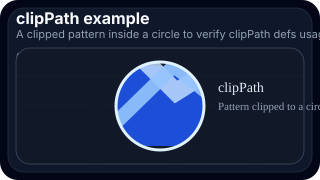

clipPath example
A clipped pattern inside a circle to verify clipPath defs usage.
- Expectation: May work on GitHub
- Notes: clipPath often works, but it is useful to verify defs-heavy features directly in GitHub.
- Path:
generated/svg/static-clip-path.svg